Humans are abacuses and more
The counting frame was possibly inspired by human anatomy.
Recall our definition of "active" bead: a bead on a rod is active if it touches the middle bar or another bead that touches the middle bar. A bead only counts if it's active. On a rod we have an upper bead which counts for 5 lower beads and each lower bead counts for 1.
Similarly we have a pair of human hands. An open right hand (for example) has 5 extended fingers so it counts for 5 similar to an active upper bead while 0, 1, 2, etc extended fingers on the left hand, just like lower beads, count for 0, 1, 2, etc as shown below.
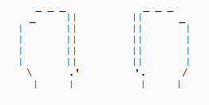
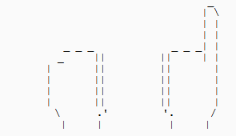
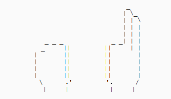
With this scheme humans can represent 0-10 on a pair of hands and have two ways of representing 5, just like with beads on our frame.
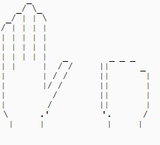
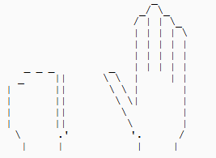
Therefore, humans are abacuses with at most 1 rod.
If a person has 2 hands with 5 fingers each then they have 1 rod. If they lack these they have 0 rods.
Using an abacus for math is exactly like using the natural digits/fingers. Only we need more rods or pairs of hands to do complex arithmetic.
Hence by using an abacus you are giving yourself more rods than the one you may already have.
Just as the human abacus can display the digit 9 with an open hand and 4 fingers, the other abacus can display the same digit with an active heaven/upper bead and 4 active earth/lower beads.
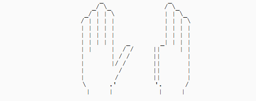

Long division
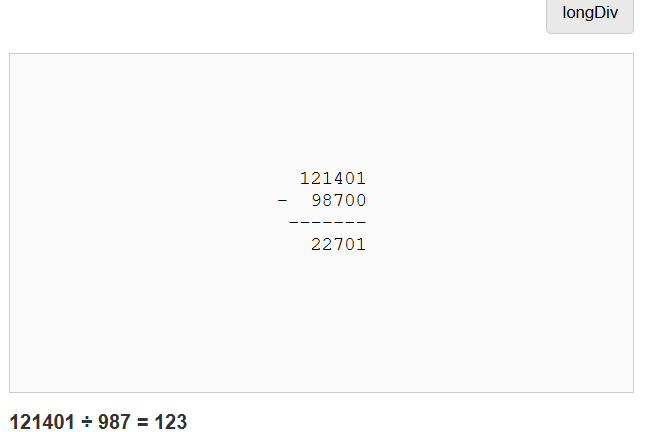
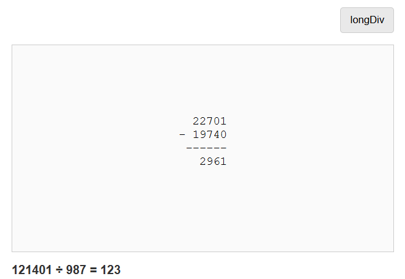
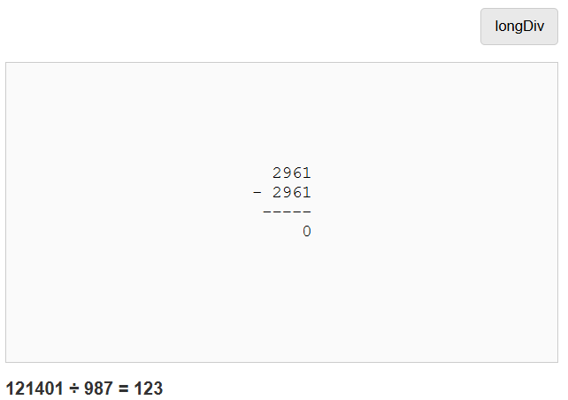
Long division (ld) can be done with an abacus. There are other abacus methods for this operation, see here.
These other methods rely on trial-and-error and mathematical intuition, ld is more reliable and consistent.
An interactive page for text-based ld has been provided for the user's benefit to make the abacus version seem less mysterious. ld turns the dividend into a minuend that gets reduced by subtrahends that are the divisor multiplied by a digit from 0 to 9 and a power of 10, and the user can see that in both abacus and text ld.
Lattice methods
The multiplication lattice
With a lattice we can reduce multi-digit number multiplication to single-digit number multiplication. The times table tells us how to do this operation for any number.
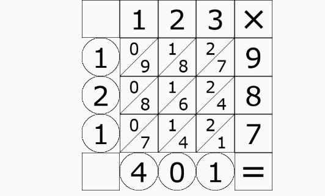
We can use the lattice method for binary numbers.
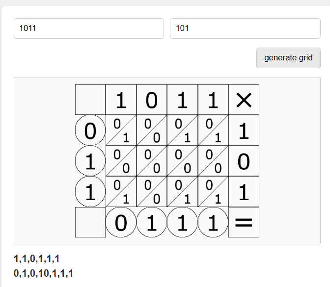
1011 (11) times 101 (5)
We can use it for any terminating decimal numbers, it works the same as doing it on integers: it gives us the right digits in the right order. Only we have to be aware of the case where one or more of the multiplicands is less than 1.
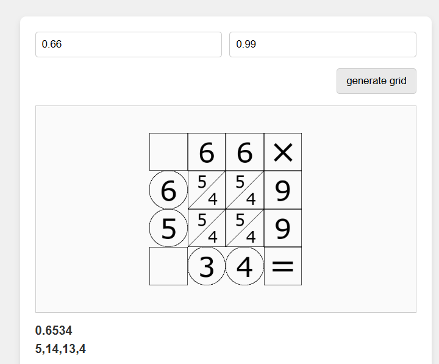
0.66 times 0.99, two numbers less than 1.
Napier's Bones
In addition to the multiplication lattice, we can use Napier's Bones for long division and finding square roots, it works by giving us each digit one at a time and completing the square.
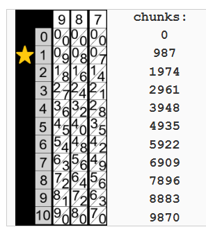
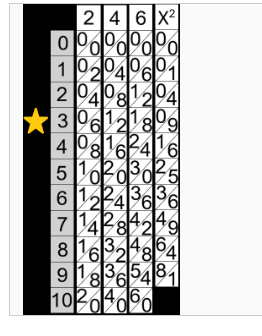
Binary Frame
The upper deck/beads of our handmade multi-digit abacus can be used for binary.
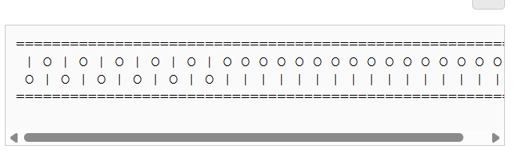
Part of the motivation for using binary numbers is much simpler arithmetic.
- The rules for borrowing and carrying alone determine the results of subtraction and addition. You don't carry if you add a 1 to a 0 or borrow if you subtract a 1 from 1.
- Fewer symbols to deal with. For example, we don't need "2+2=4" or similar basic rules because "2" and "4" aren't used in this context.
- The times table is much smaller: 2X2 instead of 10X10 for decimal.
- When doing binary long division you don't need to use a technique like Napier's bones.
Newton's Method
The last page of the interactive section contains a demo showing Newton's method (NM) for finding the cube root of 27 with an abacus and an initial guess of 4.
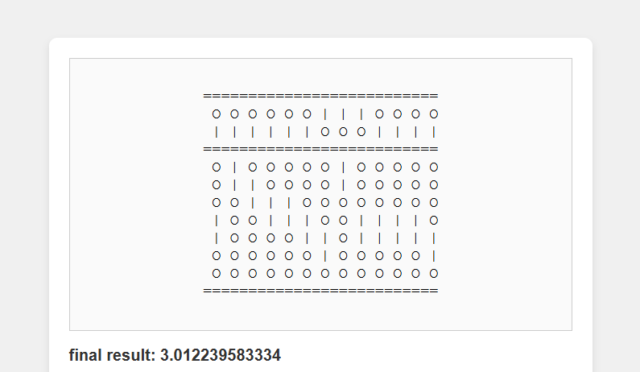
- Newton's method (NM) is a numerical algorithm used in data science and machine learning.
- We use it to find where a function is 0 from an initial guess. We guess, get (hopefully) a better guess then plug that back in.
- All we need to do it in this case is all basic arithmetic operations for arbitrary rational numbers and the famous power rule for polynomials from calculus.
- For historical details on the power rule see The History of the Calculus and Its Conceptual Development By Carl B. Boyer.
- In our Demo we guess 4, get an answer, truncate it to 3.2 and plug that back in.
- For NM there are three inputs: the guess, how much we truncate, and how many times we run the algorithm.
- I felt it would be too complicated for the user if I let them handle those with input.
- NM converges fast, which means that if we truncate too much it will quickly get "stuck" at an inaccurate answer and will return it to us no matter how many times we run it. Here it worked out, if we shorten 3.012239583334 to 3.0 we get the right answer.